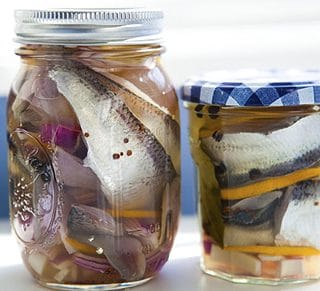

Pickeled Herring

Pickled Herring in a Jar
In this article we'll show you how to make your very own pickled herring. This will take around 30 min, not including brine time.
Ingredients
- Herring/Tullibee/Ciscoe
- All Spice
- White Distilled Vinegar
- Sugar
- Some Other Stuff
Steps
- Fillet the fish. You can leave the bones in, the accidity discolves the bones
- Brine the fillets for 24 hours in saltwater. This make the fish firm
- Combine distilled vinegar, alspice, bay leaves, lemons, onions, and sugar into a jar.
- Add the herring fillets. Let sit in fridge for 24 hours.
- Enjoy!